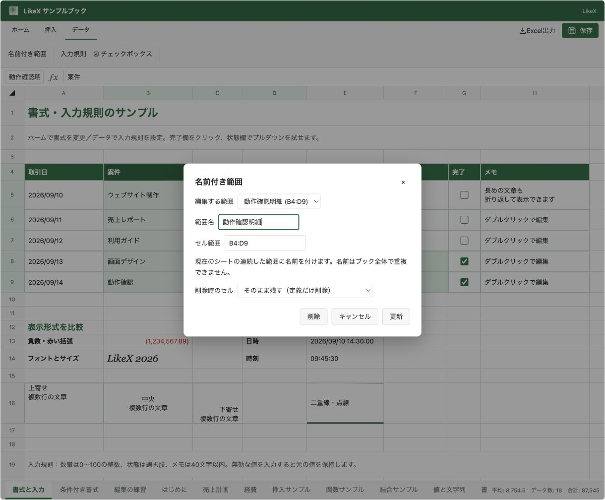

@likex/spreadsheet
名前付き範囲
連続した範囲に名前を付け、定義の取得・更新・削除や、名前を指定したセル取得を行います。
画面例を見る ↓A1:C10 のような連続範囲に名前を付け、座標を呼び出し側に書かずに参照できます。定義はブックの namedRanges に保存します。セルの値・書式とは別のデータです。
画面なしで追加・取得する#
import { createWorkbook, createSpreadsheetSession } from "@likex/spreadsheet/model";
const session = createSpreadsheetSession(createWorkbook());
const sheetId = session.getWorkbook().sheets[0].id;
const result = session.batch([
{ type: "cells.set", sheetId, values: { A1: "商品", B1: "金額", A2: "商品A", B2: "1200" } },
{ type: "namedRanges.add", sheetId, name: "売上明細", range: "A1:B2" },
]);
if (!result.ok) throw new Error(result.message);
const definition = session.getNamedRange("売上明細");
console.log(definition?.address); // "A1:B2"
const cells = session.getRangeByName("売上明細");
console.log(cells?.[1][1]?.value); // "1200"applySpreadsheetCommands(workbook, commands) でも同じコマンドを使えます。表示中の下書きには await ref.current.executeAsync(command) / batchAsync(commands) を使います。GUIでは編集許可・Undo/Redo・変更イベントを通り、永続化は別途 onSave で行います。
コマンドと戻り値#
| コマンド | 引数 |
|---|---|
namedRanges.add | sheetId, name, range |
namedRanges.update | sheetId, namedRangeId, name?, range?。IDは変えず、指定した項目を更新 |
namedRanges.clear | sheetId, namedRangeId, mode?: "values" | "all"。定義を残して対象セルをクリア |
namedRanges.delete | sheetId, namedRangeId, clear?: "none" | "values" | "all"。定義を削除 |
range は同じシート内のA1形式、または { top, left, bottom, right } です。数値は0始まりで両端を含みます。追加時はIDを生成し、成功結果の results[i].namedRangeId で受け取れます。更新・クリア・削除も同じフィールドに対象IDを返します。
const definition = session.getNamedRange("売上明細");
if (definition) {
const updated = session.execute({
type: "namedRanges.update", sheetId: definition.sheetId,
namedRangeId: definition.id, name: "今月の売上", range: "A1:B10",
});
if (!updated.ok) throw new Error(updated.message);
}名前はブック全体で一意です。大文字・小文字の違いだけでは別名にできません。文字・数字・ピリオド・アンダースコアを使えますが、先頭の数字、空白、セル番地（A1 など）、予約名は使えません。名前は255文字、定義は SPREADSHEET_LIMITS.namedRanges 件までです。テーブル名とも重複できません。
定義を消す場合と、セルも消す場合#
| 指定 | 定義 | 値・数式 | 書式・罫線・コメント・入力規則 |
|---|---|---|---|
namedRanges.delete（既定） | 削除 | 残す | 残す |
namedRanges.delete + clear: "values" | 削除 | クリア | 残す |
namedRanges.delete + clear: "all" | 削除 | クリア | クリア |
namedRanges.clear（既定） | 残す | クリア | 残す |
namedRanges.clear + mode: "all" | 残す | クリア | クリア |
いずれも周囲のセルを詰めたり、行・列を削除したりしません。all は範囲内の結合・テーブル定義・条件付き書式にも影響します。部分的に交差する結合やテーブルなどの制約はセルの書き込み・クリアと共通です。
入力規則が空白を禁止している場合、値だけのクリアは失敗します。構造化テーブルの見出しも空にできないため、テーブル全体の値を消したい場合は先に tables.delete でテーブル定義を外してください。失敗した場合、名前の定義だけを先に削除することはありません。
取得する情報#
| API | 戻り値 |
|---|---|
getNamedRange(workbook, name) | 深いreadonlyの SpreadsheetNamedRangeInfo、未登録なら undefined |
getRangeByName(workbook, name) | SpreadsheetReadRange、未登録なら undefined。未格納セルは null |
getNamedRanges(workbook, sheetId?) | 定義の配列。シートID省略でブック全体、定義がなければ [] |
定義の取得結果には、保存フィールドに加えてA1表記の address が入ります。
{
"id": "生成されたID",
"name": "売上明細",
"sheetId": "sheet-1",
"range": { "top": 0, "left": 0, "bottom": 1, "right": 1 },
"address": "A1:B2"
}セッションや表示中のHandleでは先頭の workbook 引数を省略します。session.sheet(sheetId).getNamedRanges() のように、対象シートを先に決める取得APIも使えます。
GUIと対応範囲#
「データ」→「名前付き範囲」で、現在のシートの定義を追加・変更・削除できます。数式バー左の名前ボックスへ登録名を入力してEnterを押すと、その範囲を選択します。別シートの範囲にも移動できますが、features.sheets: false の場合は現在のシート内に限ります。
行・列を範囲の前へ挿入すると範囲が移動し、内部へ挿入すると拡張します。削除では縮小し、対象が全部なくなると定義も削除します。範囲全体の切り取り移動には追従し、一部だけを分割する移動は拒否します。シート名の変更ではIDによる参照を維持します。
features.namedRanges: false は名前管理と名前ボックスからの参照を無効にします。保存済みの定義は保持します。読み取り用APIは利用できます。
対応するのは、単一シートの連続したセル範囲です。名前を使った数式（=SUM(売上明細)）、定数・数式そのものへの命名、シートごとに同名を持つスコープ、離れた複数範囲には対応していません。XLSX出力ではExcelの名前定義として保持します。
画面例
{kind=link}
